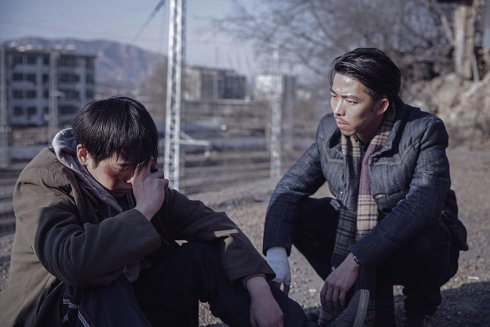

An Elephant Sitting Still

Hu Bo
|
230 min – HD – Mandarin B: Hu Bo – K: Fan Chao – S: Hu Bo – T: Bai Ruizhou – P: Liu Xuan – V: Arsenal Institute – Mit Zhang Yu, Peng Yuchang, Wang Yuwen (Huangling), Liu Congxi (Laojin)
|
sonntag 14 okt 20.00 werkstattkino
„Ein Film noir in der heruntergekommenen Mittelschicht Chinas,
erzählt im Figurenensemble. Mehrere Geschichten laufen
nebeneinander, werden abwechselnd fokussiert, bis sie sich
verdichten, die Stränge unweigerlich zusammenlaufen. Ihr
Zielpunkt: die Stadt Manzhouli, in der ein eigenartiges Kuriosum
die Attraktion ist. Ein Elefant, der einfach nur dasitzt und
seine Umgebung ignoriert, selbst wenn ihm Futter gebracht wird.
Eine Trost spendende Anschauung inmitten der Verzweiflung, die
das Leben bereithält. Und vielleicht auch role model für das
Aushalten der widrigen Umstände. Hu Bos Film ist in diesem Sinne
auch ein Aufbegehren gegen die Hoffnungslosigkeit, und ein
Plädoyer fürs Überleben.” (Dunja Bialas)
„Es fällt uns immer schwerer, Vertrauen auch nur in die winzigsten
Dinge zu haben. Die Enttäuschung darüber ist kennzeichnend für die
heutige Gesellschaft. In AN ELEPHANT SITTING STILL geht es um
persönliche Mythen inmitten des Alltags. Am Ende verliert jeder
Mensch das, was ihm am meisten bedeutet.” (Hu Bo)
Hu Bo Geboren 1988 in Jinan, Shandong, China. Er studierte Filmregie an der Beijing Film Academy. Nach zwei Kurzfilmen war An Elephant Sitting Still sein erster abendfüllender Film. Im Oktober 2017 hat Hu Bo sich das Leben genommen. |
| Films Distant Father 2014 – Fleeing by Night 2014 – An Elephant Sitting Still 2018 |